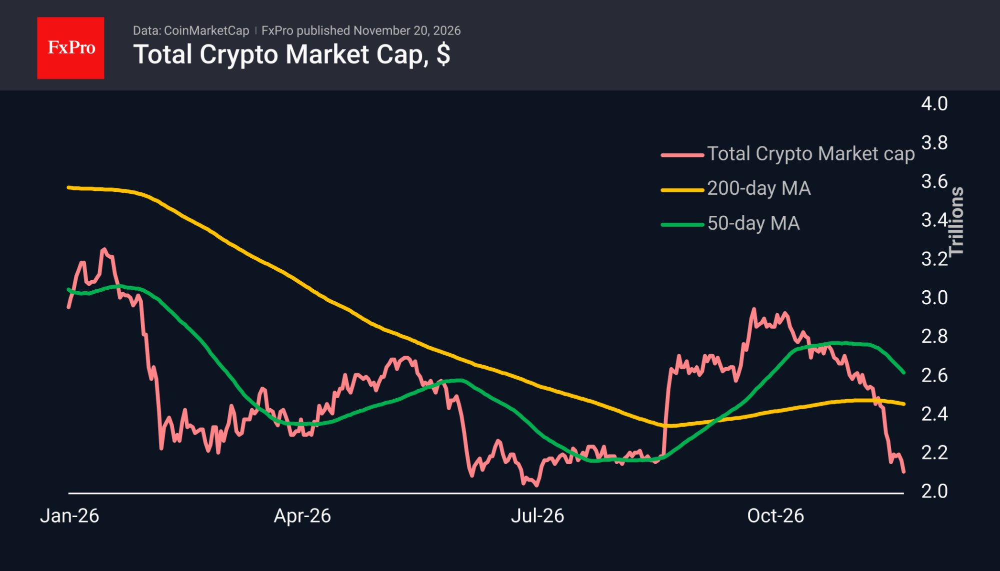
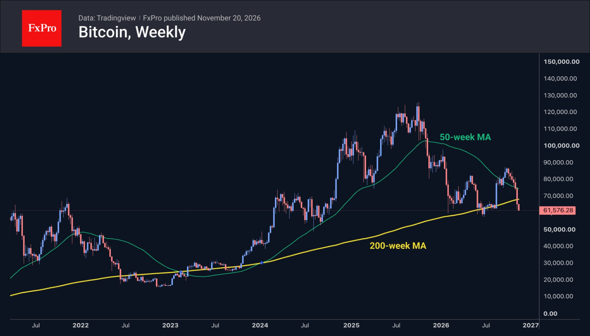
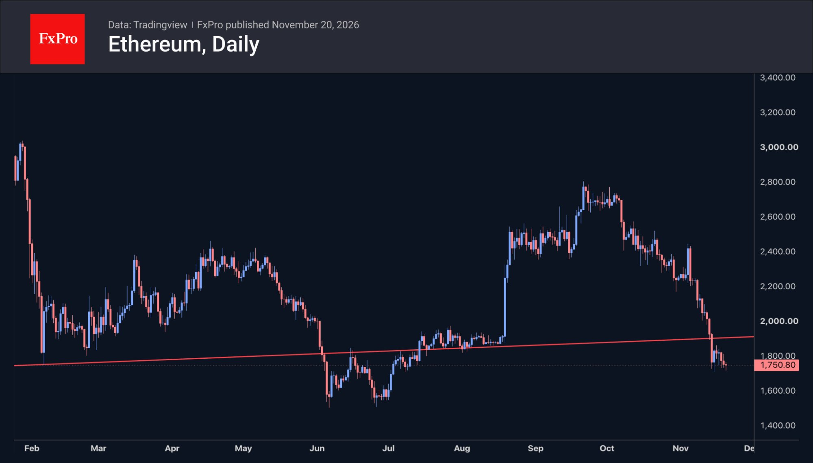

SEO
Meta Title: Crypto market retreats to $2.11T, following stocks
Meta Description: Crypto market cap fell to $2.11T and Bitcoin to $61.8K. In our view, there is no capitulation yet, as Ethereum holds 15% above its June lows.
Crypto market retreats to $2.11T, following stocks
- Crypto market capitalisation fell 2% over the past 24 hours to $2.11T, returning to the mid-summer lows.
- Bitcoin is trading around $61.8K, below the support zone established in the second half of July.
- Ethereum, at $1,750, holds 15% above its June lows, a sign that there is no capitulation yet.
Market Overview
Crypto market capitalisation fell 2% over the past 24 hours to $2.11T, dipping to $2.1T at its low. This marks a return to the mid-summer lows, when the market bottomed out at $2.06T. A sudden downturn in stocks and metals shortly after the start of active trading in New York sent Nasdaq-100 futures down 5.7% from Thursday's intraday high to a daily low at 6:30 GMT on Friday. The situation is no better for gold, which has lost nearly 15% in less than two weeks. Among the top altcoins, only Theta (+0.2%) has gained over the past 24 hours. Among other highly liquid coins, declines range from 1% (Filecoin) to 11.6% (Near Protocol).
Bitcoin is trading around $61.8K, having slipped below the support zone established in the second half of July. At the start of the day, the price dropped to $61.2K. The leading cryptocurrency traded below this level for only 10 days this summer, mainly in late June. BTC has returned to the broad support zone that held in mid-2024.
Surprisingly, Ethereum has been less volatile than the stock market or even Bitcoin. From Tuesday to the start of Friday, the coin lost just over 4% but remains above Sunday's lows, trading around $1,750. At these levels, the second-largest cryptocurrency is 15% above its June lows, leaving a sufficient margin of safety. This somewhat brightens the overall negative picture, showing that there has been no capitulation in cryptocurrencies so far. However, there is no shortage of negativity in global financial markets.
News Background
10x Research attributes the decline in cryptocurrencies not to AI-related sentiment, but to weakness in risk assets driven by elevated government bond yields, which is triggering capital outflows from stablecoins and reducing liquidity.
Long-term Bitcoin holders are booking losses, even as large wallet balances have increased over the past month. The BTC price bottom has not yet been confirmed, and the risk of a further decline remains, according to XWIN Japan.
BTC holders have recorded a net loss of $8.4 billion over the past 30 days, the highest since the summer. Even long-term holders are beginning to sell at a loss, notes analyst Woominkyu.
Apparent demand for Bitcoin has fallen below the July low, reaching its lowest level since early 2026. This points to the risk of a further price decline, warns analyst Darkfost.
The leading cryptocurrency has returned to a bearish phase amid declining demand and falling prices. There are no signs of a sustained market recovery yet, according to CryptoQuant.
What to watch
Base case: in our view, the crypto market remains hostage to sell-offs in stocks and metals, but the absence of capitulation in Ethereum limits the decline's depth.
Risks: a Bitcoin drop below its June lows near $58K and Ethereum below $1,500 would open the way to a new wave of selling, while a return of BTC above its 200-week moving average (around $68K) would signal a recovery.
Upcoming: PMI data on 23 November, US PCE and GDP on 25 November. Check the economic calendar for more events.
The FxPro Analyst Team
Charts

Source: CoinMarketCap, as of 20 November 2026.
Alt text: Line chart from January to November 2026: total crypto market capitalisation (pink line) has fallen to $2.11 trillion, near its mid-summer lows, below the 200-day (yellow line) and 50-day (green line) moving averages.

Source: TradingView, as of 20 November 2026.
Alt text: Weekly candlestick chart of Bitcoin from 2021 to November 2026: the price at $61,576 is below the 50-week (green line) and 200-week (yellow line) moving averages, near the June lows.

Source: TradingView, as of 20 November 2026.
Alt text: Daily candlestick chart of Ethereum from February to November 2026: the price at $1,750 after a decline from around $2,700 in October, above the June lows near $1,520.
Links
- gold → gold quotes page → https://fxpro.news/quotes/gold/
- two weeks → "Weekly round-up: dollar takes a step back, S&P 500 faces a key test, gold and Bitcoin in a nosedive", 19.11.2026 → https://fxpro.news/market-overview/weekly-round-up-dollar-takes-a-step-back-sp-500-faces-a-key-test-gold-and-bitcoin-in-a-nosedive/
- Bitcoin (instrument page) → https://fxpro.news/quotes/bitcoin/
- dropped → "Bitcoin has tested $62K again but remains above it", 19.11.2026 → https://fxpro.news/crypto/bitcoin-has-tested-62k-again-but-remains-above-it/
- Ethereum (instrument page) → https://fxpro.news/quotes/ethereum/
- lost → "Once again, the cryptocurrency market is in a fragile consolidation phase", 17.11.2026 → https://fxpro.news/crypto/once-again-the-cryptocurrency-market-is-in-a-fragile-consolidation-phase/